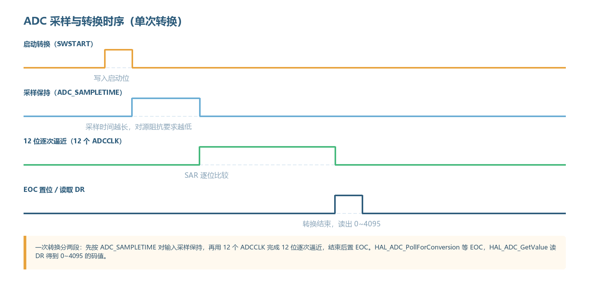
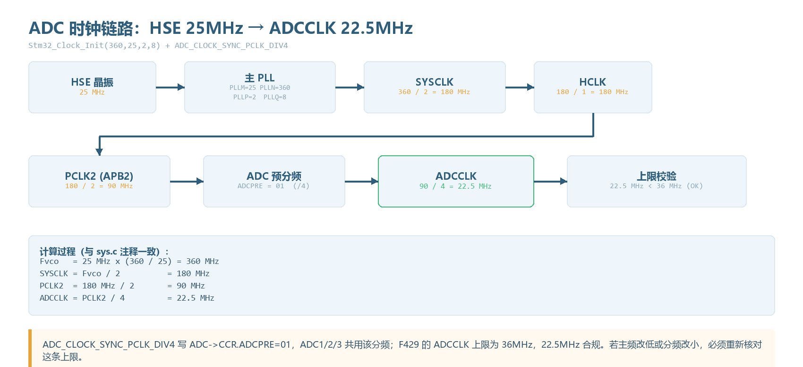
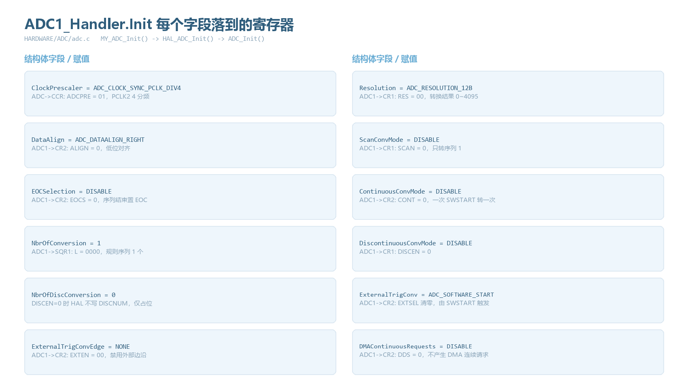
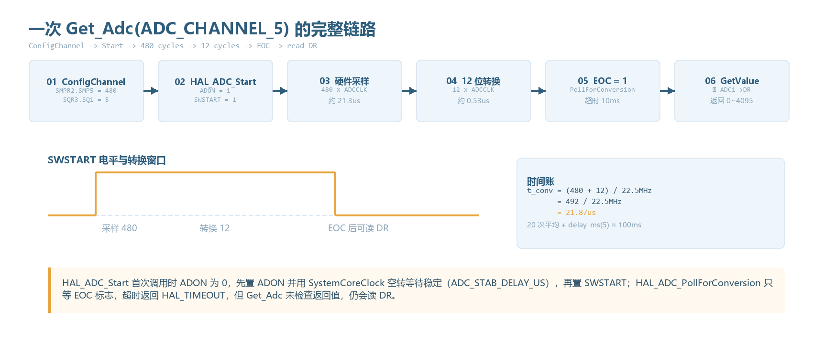
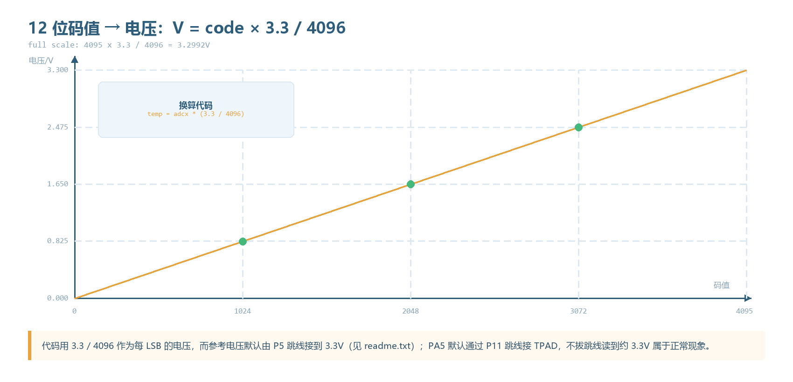

01 实验目标与硬件资源
先确定“用哪个 ADC、哪个引脚、看什么现象”，后面的初始化才有落点
本实验用 STM32F429 片内 ADC1 的通道 5 采集 PA5 上的模拟电压，配置为 12 位、单次、软件触发、轮询读取。主循环每次取 20 次转换的平均值，LCD 同时显示原始码值与换算后的电压；DS0 每轮翻转一次。串口 1 在本实验只承担 printf，不参与数据采集。
| 资源 | 连接 / 参数 | 源码位置 |
|---|---|---|
| ADC1_IN5 | PA5，模拟输入，12 位，量程 0~4095 | HARDWARE/ADC/adc.c |
| 参考电压 | 默认由 P5 跳线接到 3.3V，满量程 3.3V | readme.txt |
| DS0 | PB1（LED0），推挽输出，初始化置高（灭） | HARDWARE/LED/led.c |
| USART1 | PA9 / PA10，115200-8-N-1，供 LCD_Init 内的 printf 使用 | SYSTEM/usart/usart.c |
| LCD | MCU 屏或 RGB 屏，显示码值与电压 | HARDWARE/LCD/lcd.c |
| 测试接口 | P11 多功能接口的 ADC 即 PA5；默认经跳线帽接 TPAD | readme.txt |
ADC1_IN5
12-bit
0 ~ 4095
3.3V / 4096
ADCCLK 22.5MHz
480 cycles
readme 明确提示：PA5 默认通过 P11 跳线接 TPAD，不拔跳线读到约 3.3V 属正常现象；ADC 输入不得超过 3.3V。另外
LCD_Init 内部会调用 printf，所以 uart_init 必须排在它前面。02 目录与文件分工
先定位“哪一段代码负责哪一步”，再按启动顺序读
| 文件 | 负责什么 | 本页看什么 |
|---|---|---|
USER/main.c | 初始化顺序、LCD 固定字符、主循环采样与显示 | 全文与 while(1) |
CORE/startup_stm32f429xx.s | 向量表、栈堆、Reset_Handler | Stack 0x400 / Heap 0x200 |
USER/system_stm32f4xx.c | SystemInit：FPU、RCC 复位、VTOR | VECT_TAB_OFFSET 0x00 |
SYSTEM/sys/sys.c | Stm32_Clock_Init：HSE → PLL → 180MHz | PLL 参数与分频 |
SYSTEM/delay/delay.c | SysTick 轮询延时 | fac_us=SYSCLK，不依赖中断 |
SYSTEM/usart/usart.c | USART1 初始化与 fputc | printf 重定向 |
USER/stm32f4xx_it.c | 内核异常与 SysTick_Handler | 本实验没有 ADC 中断 |
HARDWARE/ADC/adc.c | ADC1 初始化、MSP、单次读取、多次平均 | 本页核心 |
HARDWARE/LED/led.c | PB0 / PB1 推挽输出 | LED0 = PBout(1) |
HARDWARE/SDRAM/sdram.c | FMC SDRAM 初始化 | RGB 屏显存前提 |
HARDWARE/LCD/lcd.c | 读屏 ID、LCD / LTDC、字符与数字显示 | LCD_ShowxNum |
HALLIB/.../stm32f4xx_hal_adc.c | HAL_ADC_Init / ConfigChannel / Start / Poll / GetValue | 只读被调用的函数 |
工程里没有 ADC 中断：
stm32f4xx_it.c 未实现 ADC_IRQHandler，启动文件中的同名入口只是弱定义；MY_ADC_Init 也没有调用 HAL_NVIC_EnableIRQ，转换完成完全靠轮询 EOC。03 启动流程总览
从上电复位到 while(1)，每一次初始化分别在解决什么问题


一次转换分两段：先按 ADC_SAMPLETIME 采样保持，再用 12 个 ADCCLK 完成 12 位逐次逼近，结束后置 EOC。采样时间越长对源阻抗要求越低，但转换更慢；轮询等 EOC 后再读 DR 才能拿到本次结果。
main 函数（原文）
int main(void)
{
u16 adcx; //存放 ADC 原始码值（0~4095）
float temp; //存放换算后的电压值
HAL_Init(); //初始化HAL库
Stm32_Clock_Init(360,25,2,8); //设置时钟,180Mhz
delay_init(180); //初始化延时函数
uart_init(115200); //初始化USART
LED_Init(); //初始化LED
KEY_Init(); //初始化按键
SDRAM_Init(); //初始化SDRAM
LCD_Init(); //初始化LCD
MY_ADC_Init(); //初始化ADC1通道5
POINT_COLOR=RED; //设置字体颜色为红色
LCD_ShowString(30,50,200,16,16,"Apollo STM32F4/F7"); //显示开发板型号
LCD_ShowString(30,70,200,16,16,"ADC TEST"); //显示实验名称
LCD_ShowString(30,90,200,16,16,"ATOM@ALIENTEK"); //显示作者标识
LCD_ShowString(30,110,200,16,16,"2016/1/13"); //显示日期
POINT_COLOR=BLUE;//设置字体为蓝色
LCD_ShowString(30,130,200,16,16,"ADC1_CH5_VAL:"); //显示码值标签
LCD_ShowString(30,150,200,16,16,"ADC1_CH5_VOL:0.000V");//先在固定位置显示小数点
while(1)
{
adcx=Get_Adc_Average(ADC_CHANNEL_5,20);//获取通道5的转换值，20次取平均
LCD_ShowxNum(134,130,adcx,4,16,0); //显示ADCC采样后的原始值
temp=(float)adcx*(3.3/4096); //换算电压，比如3.1111
adcx=temp; //取整数部分（float 隐式转 u16）
LCD_ShowxNum(134,150,adcx,1,16,0); //显示整数部分
temp-=adcx; //去掉已显示的整数部分
temp*=1000; //小数部分放大 1000 倍
LCD_ShowxNum(150,150,temp,3,16,0X80); //显示三位小数，0X80 表示补前导 0
LED0=!LED0; //DS0 翻转，指示主循环在运行
delay_ms(250); //延时 250ms，控制刷新节拍
}
}
关键逻辑：每一行初始化解决什么问题
HAL_Init()：开 Flash 指令/数据缓存与预取，把中断分组固定为NVIC_PRIORITYGROUP_2，并按复位后的 HSI 16MHz 建立 1ms SysTick。Stm32_Clock_Init(360,25,2,8)：HSE 25MHz 经 PLL 得到 SYSCLK 180MHz，同时配置 AHB/APB 分频与 Flash 5WS。delay_init(180)：把fac_us设为 180，并把 SysTick 时钟源切到 HCLK；不依赖中断，靠轮询VAL计数。uart_init(115200)：PA9/PA10 复用 AF7，fputc重定向，LCD_Init里的printf才能输出。LED_Init()：PB0/PB1 推挽输出并置高，DS0 初始为灭；LED0实际是PBout(1)。KEY_Init()：本实验主循环未使用按键，属于例程统一保留。SDRAM_Init()：RGB 屏帧缓存位于外部 SDRAM，必须先让 FMC 控制器工作。LCD_Init()：读屏 ID 后选择 LTDC 或 FMC 屏；其中会printf屏 ID，所以串口必须已初始化。MY_ADC_Init()：只配置 ADC1 与 PA5，依赖 GPIOA / ADC1 时钟，放在最后不影响前面外设。while(1)：采样 20 次取平均 → 显示码值 → 换算并显示电压 → 翻转 DS0 → 延时 250ms。
顺序为什么不能随意换
- HAL_Init 在时钟切换之前：它按复位后的 HSI 建立时基；
HAL_RCC_ClockConfig结尾会再次调用HAL_InitTick(TICK_INT_PRIORITY)，用新的 HCLK 重算 1ms 重装值。 - delay_init 在时钟切换之后：
fac_us直接取 180，若在 16MHz 时调用会得到错误的延时倍乘。 - uart_init 在 LCD_Init 之前：
LCD_Init内的printf依赖已初始化的 USART1，否则串口无输出。 - SDRAM 在 LCD 之前：RGB 屏帧缓存依赖 SDRAM 控制器，顺序颠倒会写不进显存。
- MY_ADC_Init 可以放最后：ADC1 与 PA5 不依赖 LCD/SDRAM，只依赖 RCC 与 GPIOA 时钟。
04 启动文件与向量表
复位后 CPU 从哪里取栈顶、从哪里取第一条指令
| 项目 | 值 | 含义 / 来源 |
|---|---|---|
| Stack_Size | 0x400（1KB） | AREA STACK, NOINIT, READWRITE, ALIGN=3 |
| Heap_Size | 0x200（512B） | __heap_base / __heap_limit |
| 向量表第 0 项 | __initial_sp | 复位时硬件装入 MSP |
| 向量表第 1 项 | Reset_Handler | 复位后第一条指令入口 |
| VTOR | FLASH_BASE | 0x00 = 0x08000000 | system_stm32f4xx.c 中 VECT_TAB_OFFSET 0x00 |
| ADC 中断入口 | ADC_IRQHandler（WEAK） | 启动文件弱定义，工程未重写、未使能 |
Stack_Size EQU 0x400 ;栈大小 1KB AREA STACK, NOINIT, READWRITE, ALIGN=3 ;定义栈段，未初始化、读写、8 字节对齐 Stack_Mem SPACE Stack_Size ;分配 1KB 栈空间 __initial_sp ;栈顶地址，复位时装进 MSP Heap_Size EQU 0x200 ;堆大小 512B AREA HEAP, NOINIT, READWRITE, ALIGN=3 ;定义堆段，未初始化、读写、8 字节对齐 __heap_base ;堆起始地址 Heap_Mem SPACE Heap_Size ;分配 512B 堆空间 __heap_limit ;堆结束地址 __Vectors DCD __initial_sp ;第 0 项：初始 MSP DCD Reset_Handler ;第 1 项：复位入口 DCD NMI_Handler ;第 2 项：不可屏蔽中断 DCD HardFault_Handler ;第 3 项：硬 fault ;……省略 SysTick 之前的内核异常项，顺序与 CMSIS 固定表一致…… DCD SysTick_Handler ;SysTick 异常入口 ;……省略外设中断项，ADC 项如下…… DCD ADC_IRQHandler ;ADC1/2/3 共用，弱定义 Reset_Handler PROC ;复位处理函数开始 EXPORT Reset_Handler [WEAK] ;导出为弱符号，可被用户覆盖 IMPORT SystemInit ;声明外部符号 SystemInit IMPORT __main ;声明 C 库入口 __main LDR R0, =SystemInit ;把 SystemInit 地址装入 R0 BLX R0 ;开 FPU、复位 RCC、设置 VTOR LDR R0, =__main ;把 __main 地址装入 R0 BX R0 ;进入 C 库启动，不返回 ENDP ;复位处理函数结束
关键逻辑：启动文件只做“两跳”，其余交给 C 库
Reset_Handler先BLX SystemInit，再BX __main；没有手写.data复制与.bss清零循环。- 复制
.data、清零.bss、初始化堆栈由 C 库__main完成，之后才调用main。 - 堆只有 512B，工程本身不调用
malloc；ADC 句柄ADC1_Handler是全局变量，落在.bss。 ADC1_Handler无初值，启动后全 0，因此State == HAL_ADC_STATE_RESET，HAL_ADC_Init才会调用HAL_ADC_MspInit。- 向量表固定在 Flash 起始
0x08000000，未重定位到 SRAM；启动文件的ADC_IRQHandler未被覆盖，因为本实验不用 ADC 中断。
05 SystemInit 与 HAL_Init
进入 main 之前，芯片已经被复位到 HSI 16MHz；main 第一行再把 HAL 时基与中断分组立起来
SystemInit：FPU、RCC 复位、VTOR
void SystemInit(void) //复位后第一个 C 函数，由 Reset_Handler 调用 { #if (__FPU_PRESENT == 1) && (__FPU_USED == 1) //若启用了 FPU，则打开 CP10/CP11 SCB->CPACR |= ((3UL << 10*2)|(3UL << 11*2)); // CP10/CP11 全访问，开 FPU #endif //结束 FPU 条件编译 RCC->CR |= (uint32_t)0x00000001; // 打开 HSI RCC->CFGR = 0x00000000; // 时钟源回 HSI，清全部分频 RCC->CR &= (uint32_t)0xFEF6FFFF; // 关 HSEON / CSSON / PLLON RCC->PLLCFGR = 0x24003010; // PLLCFGR 复位值 RCC->CR &= (uint32_t)0xFFFBFFFF; // 清 HSEBYP RCC->CIR = 0x00000000; // 关所有 RCC 中断 SCB->VTOR = FLASH_BASE | VECT_TAB_OFFSET; // 0x08000000 | 0x00 }
关键逻辑：SystemInit 只做"复位+开FPU+定VTOR"三件事
- FPU 通过
CPACR的 CP10/CP11 位打开，让单精度浮点指令（如 main 里的float运算）能在硬件上执行。 - RCC 寄存器全部写回复位值，确保进入
main时主频是 HSI 16MHz，而不是上一次运行残留的配置。 VTOR指向0x08000000，中断向量表仍在 Flash 起始，未重定位到 SRAM。- 此函数不配置 PLL、不配置 GPIO、不开任何外设时钟；这些都是后面
main的工作。 - 因为
RCC->CFGR=0，此时 SYSCLK=HSI=16MHz，HAL_Init里的 SysTick 重装值才会算出 16000。
HAL_Init：缓存、优先级分组、1ms 时基
// 省略三个 #if 条件编译外壳，只保留工程配置下真正被编译的语句 HAL_StatusTypeDef HAL_Init(void) //HAL 库初始化入口，main 第一行调用 { __HAL_FLASH_INSTRUCTION_CACHE_ENABLE(); //开 Flash 指令缓存，加快取指 __HAL_FLASH_DATA_CACHE_ENABLE(); //开 Flash 数据缓存，加快常数读取 __HAL_FLASH_PREFETCH_BUFFER_ENABLE(); //开 Flash 预取，抵消等待周期 HAL_NVIC_SetPriorityGrouping(NVIC_PRIORITYGROUP_2);//中断优先级分组2 HAL_InitTick(TICK_INT_PRIORITY); //复位后 HSI 16MHz，重装 16000 → 1ms HAL_MspInit(); //弱函数，工程未重写 return HAL_OK; //返回成功状态 }
关键逻辑：为什么切到 180MHz 后 1ms 仍然准确
SystemInit把 RCC 全部恢复为复位状态，所以进入main时实际主频是 HSI 16MHz，不是 180MHz。HAL_InitTick用HAL_RCC_GetHCLKFreq()/1000计算重装值，此刻得到 16000，SysTick 为 1ms。Stm32_Clock_Init调用HAL_RCC_ClockConfig，该函数结尾再次执行HAL_InitTick(TICK_INT_PRIORITY)，重装值变为 180000。HAL_MspInit在stm32f4xx_hal.c中是__weak空实现，工程没有覆盖，因此这里不配置任何引脚。NVIC_PRIORITYGROUP_2表示 2 位抢占优先级、2 位子优先级；后面的 USART1 用HAL_NVIC_SetPriority(USART1_IRQn,3,3)正好落在这套分组里。
06 时钟 / 延时 / 串口
ADC 的输入时钟来自 PCLK2，所以先把整条时钟树算清楚
| 时钟 | 算式 | 结果 |
|---|---|---|
| HSE | 板载晶振 | 25 MHz |
| PLL VCO | 25 × (360 / 25) | 360 MHz |
| SYSCLK | 360 / PLLP(2) | 180 MHz |
| HCLK | 180 / AHB(1) | 180 MHz |
| PCLK1 | 180 / APB1(4) | 45 MHz |
| PCLK2 | 180 / APB2(2) | 90 MHz |
| PLLQ | 360 / 8 | 45 MHz（USB/SDIO/RNG） |
| Flash 等待 | FLASH_LATENCY_5 | 5WS，6 个 CPU 周期 |
| SysTick | HCLK / 1000 = 180000 | 1ms |
__HAL_RCC_PWR_CLK_ENABLE(); //开 PWR 时钟，才能配置电压等级与 Over-Drive __HAL_PWR_VOLTAGESCALING_CONFIG(PWR_REGULATOR_VOLTAGE_SCALE1);//电压等级 1 RCC_OscInitStructure.OscillatorType=RCC_OSCILLATORTYPE_HSE;//时钟源 HSE RCC_OscInitStructure.HSEState=RCC_HSE_ON; //打开外部高速晶振 25MHz RCC_OscInitStructure.PLL.PLLState=RCC_PLL_ON; //使能 PLL RCC_OscInitStructure.PLL.PLLSource=RCC_PLLSOURCE_HSE; //PLL 输入源选 HSE RCC_OscInitStructure.PLL.PLLM=pllm; //25 RCC_OscInitStructure.PLL.PLLN=plln; //360 RCC_OscInitStructure.PLL.PLLP=pllp; //2 RCC_OscInitStructure.PLL.PLLQ=pllq; //8 ret=HAL_RCC_OscConfig(&RCC_OscInitStructure); //按上述参数配置振荡器与 PLL ret=HAL_PWREx_EnableOverDrive(); //180MHz 必须开 Over-Drive RCC_ClkInitStructure.SYSCLKSource=RCC_SYSCLKSOURCE_PLLCLK; //系统时钟源选 PLL RCC_ClkInitStructure.AHBCLKDivider=RCC_SYSCLK_DIV1; //AHB 不分频，HCLK=180MHz RCC_ClkInitStructure.APB1CLKDivider=RCC_HCLK_DIV4; //APB1 4 分频，PCLK1=45MHz RCC_ClkInitStructure.APB2CLKDivider=RCC_HCLK_DIV2; //APB2 2 分频，PCLK2=90MHz ret=HAL_RCC_ClockConfig(&RCC_ClkInitStructure,FLASH_LATENCY_5); //应用时钟配置并设 Flash 5 等待
关键逻辑：PLL 参数如何算出 180MHz 以及三条总线频率
- PLL 输入 = HSE 25MHz / PLLM(25) = 1MHz；VCO = 1MHz × PLLN(360) = 360MHz。
- SYSCLK = VCO / PLLP(2) = 180MHz；PLLQ = 360 / 8 = 45MHz 供 USB/SDIO/RNG。
- HCLK = SYSCLK / AHB(1) = 180MHz；PCLK1 = 180 / APB1(4) = 45MHz；PCLK2 = 180 / APB2(2) = 90MHz。
- ADC 挂在 APB2，其输入时钟就是 90MHz 的 PCLK2，再经 ADC 预分频 /4 得到 22.5MHz ADCCLK。
- 180MHz 必须同时满足电压等级 1、Over-Drive 开启、Flash 5WS，三者缺一都会导致运行不稳定。
延时与串口
void delay_init(u8 SYSCLK) //初始化延时函数，传入系统主频 180 { HAL_SYSTICK_CLKSourceConfig(SYSTICK_CLKSOURCE_HCLK);//SysTick 时钟为 HCLK fac_us=SYSCLK; //180：1us 对应 180 个 HCLK } void delay_us(u32 nus) //微秒级延时，nus 为延时微秒数 { u32 ticks; //需要计数的总节拍数 ticks=nus*fac_us; //需要的节拍数 told=SysTick->VAL; //刚进入时的递减计数器值 while(1) //死循环轮询，直到累计节拍达标 { tnow=SysTick->VAL; //读取当前递减计数器值 if(tnow!=told) //计数器有变化才累加 { if(tnow<told)tcnt+=told-tnow; //正常递减，差值即为经过的节拍 else tcnt+=reload-tnow+told;//计数器回绕 told=tnow; //更新上一次的计数值 if(tcnt>=ticks)break; //累计节拍达标，退出循环 } } } void delay_ms(u16 nms) //毫秒级延时，nms 为延时毫秒数 { u32 i; //循环计数变量 for(i=0;i<nms;i++) delay_us(1000);//非 OS 版本：循环 1ms }
关键逻辑：时钟、延时、串口三者的依赖
- PCLK2 = 90MHz 是 ADC 预分频的输入，后面 22.5MHz 的 ADCCLK 完全由这里决定。
- 180MHz 属于 F429 的高频档，必须同时满足电压等级 1、Over-Drive 打开、Flash 5WS 三个条件，缺一不可。
fac_us=180只在SYSTEM_SUPPORT_OS=0的分支里使用；该分支不打开 SysTick 中断，延时是纯轮询。- 正因为不依赖中断，
delay_us在任何中断上下文里也能用；代价是延时期间 CPU 空转。 - USART1 的
fputc直接轮询USART1->SR的 TXE 位，不发中断；EN_USART1_RX=1时 MSP 里才会开 RXNE 中断与 NVIC（优先级 3,3）。
本实验只用到
printf 输出，没有使用串口接收；USART1_IRQHandler 虽已实现，但主循环不依赖它。07 ADC 时钟与分频计算
ADC1 挂 APB2，ADCCLK 由 ADC 通用预分频器再分一次

ADC1_Handler.Init.ClockPrescaler=ADC_CLOCK_SYNC_PCLK_DIV4; //ADC 预分频选 4 分频 // 原注释：4分频，ADCCLK=PCLK2/4=90/4=22.5MHZ // HALLIB 内 ADC_Init() 真正写寄存器的地方： ADC->CCR &= ~(ADC_CCR_ADCPRE); //先清 ADCPRE 位 ADC->CCR |= hadc->Init.ClockPrescaler; //ADC_CLOCK_SYNC_PCLK_DIV4 = ADCPRE_0
| 项目 | 数值 | 依据 |
|---|---|---|
| ADC 输入时钟源 | PCLK2 | F429 的 ADC 挂在 APB2 |
| 预分频 | /4 | ADC_CLOCK_SYNC_PCLK_DIV4，写 ADC->CCR.ADCPRE=01 |
| ADCCLK | 22.5 MHz | 90MHz / 4 |
| 上限 | 36 MHz | 数据手册 ADCCLK 上限，22.5MHz 合规 |
| 共用关系 | ADC1/2/3 | ADC->CCR 是公共寄存器 |
关键逻辑：分频系数不能随手改
ADC->CCR是 ADC1/2/3 共用的公共寄存器，改预分频会影响所有 ADC 实例，不是 ADC1 私有。- 若把 APB2 分频改成 /4，则 PCLK2=45MHz，再用 /4 得 11.25MHz，转换时间变长但不会超限。
- 若把 ADC 预分频改成 /2，ADCCLK=45MHz，超过 36MHz 上限，转换结果不可信。
- 本工程把分频写在结构体里，由
HAL_ADC_Init → ADC_Init统一落地；Get_Adc每次只改通道，不再改时钟。 - 采样时间 480 个 ADCCLK 与 12 位转换的 12 个周期，都以 22.5MHz 为基准计算。
08 GPIO 模拟输入配置
ADC 的引脚配置不在 MY_ADC_Init 里，而在 HAL_ADC_MspInit 回调中
void HAL_ADC_MspInit(ADC_HandleTypeDef* hadc) //ADC 底层初始化回调，由 HAL_ADC_Init 调用 { GPIO_InitTypeDef GPIO_Initure; //GPIO 配置结构体 __HAL_RCC_ADC1_CLK_ENABLE(); //使能ADC1时钟 __HAL_RCC_GPIOA_CLK_ENABLE(); //开启GPIOA时钟 GPIO_Initure.Pin=GPIO_PIN_5; //PA5 GPIO_Initure.Mode=GPIO_MODE_ANALOG; //模拟 GPIO_Initure.Pull=GPIO_NOPULL; //不带上下拉 HAL_GPIO_Init(GPIOA,&GPIO_Initure); //把 PA5 配置写入 GPIOA 寄存器 }
| 字段 | 值 | 作用 |
|---|---|---|
| Pin | GPIO_PIN_5 | PA5，对应 ADC1_IN5 |
| Mode | GPIO_MODE_ANALOG | 断开数字输入缓冲，引脚直连 ADC 采样网络 |
| Pull | GPIO_NOPULL | 不接内部上/下拉，避免改变外部被测电压 |
| Speed | 未赋值 | 模拟模式不使用输出速度，HAL_GPIO_Init 不会写 OSPEEDR |
| Alternate | 未赋值 | 非复用模式，不需要 AF 编号 |
关键逻辑：MSP 回调何时被调用
HAL_ADC_Init只在hadc->State == HAL_ADC_STATE_RESET时调用HAL_ADC_MspInit；ADC1_Handler是全局零初始化变量，首次必然满足。- MspInit 里同时开了 ADC1 与 GPIOA 时钟，顺序是先 ADC 后 GPIO，二者互不依赖。
GPIO_Initure是局部变量且未清零，Speed/Alternate是栈上残留值；模拟模式不读这两个字段，所以现象正常，但这是写法上的隐患。GPIO_NOPULL很关键：若误设上拉，PA5 悬空时会被拉到 3.3V，读数失真。- PA5 与 TPAD 共用 P11 跳线，硬件跳线不拔时读到接近 3.3V 不是软件问题。
09 ADC 初始化结构体逐字段
12 个字段决定工作模式，HAL 再把它们翻译成 CR1 / CR2 / SQR1 / CCR

ADC_HandleTypeDef ADC1_Handler;//全局句柄，零初始化 → State=RESET void MY_ADC_Init(void) //ADC1 初始化入口，main 中调用 { ADC1_Handler.Instance=ADC1; //句柄绑定到 ADC1 外设基地址 ADC1_Handler.Init.ClockPrescaler=ADC_CLOCK_SYNC_PCLK_DIV4; //4分频，ADCCLK=22.5MHZ ADC1_Handler.Init.Resolution=ADC_RESOLUTION_12B; //12位模式 ADC1_Handler.Init.DataAlign=ADC_DATAALIGN_RIGHT; //右对齐 ADC1_Handler.Init.ScanConvMode=DISABLE; //非扫描模式 ADC1_Handler.Init.EOCSelection=DISABLE; //关闭EOC中断 ADC1_Handler.Init.ContinuousConvMode=DISABLE; //关闭连续转换 ADC1_Handler.Init.NbrOfConversion=1; //规则序列只有 1 个转换 ADC1_Handler.Init.DiscontinuousConvMode=DISABLE; //禁止不连续采样 ADC1_Handler.Init.NbrOfDiscConversion=0; //不连续通道数 0 ADC1_Handler.Init.ExternalTrigConv=ADC_SOFTWARE_START; //软件触发 ADC1_Handler.Init.ExternalTrigConvEdge=ADC_EXTERNALTRIGCONVEDGE_NONE; //外部触发边沿禁用，纯软件触发 ADC1_Handler.Init.DMAContinuousRequests=DISABLE; //关闭DMA请求 HAL_ADC_Init(&ADC1_Handler); //初始化 }
关键逻辑：MY_ADC_Init 为什么这样配
ClockPrescaler=DIV4：APB2=90MHz，4 分频后 ADCCLK=22.5MHz，落在 0.6MHz~36MHz 允许范围，兼顾精度与采样速度。ScanConvMode=DISABLE+NbrOfConversion=1：只转 1 个通道，关闭扫描后规则序列只走一次，结构最简单。ContinuousConvMode=DISABLE+ExternalTrigConvEdge=NONE：每次Get_Adc只做一次软件触发转换，需要数据时再启动，不连续占用 ADC。EOCSelection=DISABLE：不使用 EOC 中断，改由HAL_ADC_PollForConversion轮询，省去中断配置与回调。
// 省略 __HAL_LOCK/__HAL_UNLOCK 与 assert_param 参数校验 HAL_StatusTypeDef HAL_ADC_Init(ADC_HandleTypeDef* hadc) //HAL ADC 初始化入口 { if(hadc->State == HAL_ADC_STATE_RESET) //仅首次（State=RESET）才调用 MspInit { hadc->Lock = HAL_UNLOCKED; //解锁句柄，允许后续操作 HAL_ADC_MspInit(hadc); //开 ADC1/GPIOA 时钟并配置 PA5 } hadc->State = HAL_ADC_STATE_BUSY; //标记为忙，防止重入 ADC_Init(hadc); //把结构体逐项写进寄存器 hadc->State = HAL_ADC_STATE_READY; //初始化完成，标记就绪 return HAL_OK; //返回成功 }
关键逻辑：每个字段为什么这样选
Resolution=12B决定码值范围 0~4095；换 10 位/8 位会改变满量程分母，而 main 里的3.3/4096没有跟着改，这是换分辨率时最容易漏的地方。DataAlign=RIGHT让 12 位结果落在 DR 的低 12 位，直接读DR即可；左对齐会放大 16 倍。ScanConvMode=DISABLE+NbrOfConversion=1：规则组只转序列 1，配合SQR1.L=0。ContinuousConvMode=DISABLE：每次HAL_ADC_Start的 SWSTART 只触发一轮，转完就停，符合轮询单次读取。EOCSelection=DISABLE写CR2.EOCS=0，EOC 在序列结束时置位；本工程没开 EOC 中断，只把它当查询标志。ExternalTrigConv=ADC_SOFTWARE_START时ADC_Init清EXTSEL与EXTEN，之后HAL_ADC_Start才能用 SWSTART 启动。NbrOfDiscConversion仅在DISCEN=1时才写DISCNUM；这里DISCEN=0，它只是占位值。
10 采样时间与转换时序
480 个周期的采样时间换来稳定的高阻信号，代价是单次约 21.9μs
| 阶段 | 周期数 | @22.5MHz | 来源 |
|---|---|---|---|
| 采样 | 480 | 约 21.33 μs | ADC_SAMPLETIME_480CYCLES |
| 12 位转换 | 12 | 约 0.53 μs | 分辨率决定的固定转换周期 |
| 单次合计 | 492 | 约 21.87 μs | 480 + 12 |
| 20 次平均 | 20 次 | 约 100 ms（不含转换） | 每次后有 delay_ms(5) |
| 轮询超时 | — | 10 ms | HAL_ADC_PollForConversion(&ADC1_Handler,10) |
u16 Get_Adc_Average(u32 ch,u8 times) //对通道 ch 采样 times 次取平均 { u32 temp_val=0; //累计采样值，u32 防止溢出 u8 t; //循环计数变量 for(t=0;t<times;t++) //循环采样 times 次 { temp_val+=Get_Adc(ch); //单次转换，返回 0~4095 delay_ms(5); //每次之间停 5ms } return temp_val/times; //整数平均，丢弃余数 }
关键逻辑：时间都花在哪、有没有风险
- 采样时间选最长的 480 周期，适合高阻抗信号源；如果被测源阻抗很低，可以改短以提高速度。
- 转换总时间 492 / 22.5MHz ≈ 21.9μs，远小于轮询超时 10ms，正常情况下不会超时。
delay_ms(5)是轮询式空转，20 次共约 100ms，主循环节拍主要由它和末尾的 250ms 决定。temp_val是u32，20 次最大 81900，不会溢出；平均值用整数除法，小数被截掉。- 每次
Get_Adc都重新调用HAL_ADC_ConfigChannel，通道配置被重复写入；对单通道应用是冗余但安全的。
11 单次转换调用链与取值
Get_Adc 一次调用经过 4 个 HAL 函数，最后直接读 DR

u16 Get_Adc(u32 ch) //对通道 ch 做单次转换并返回码值 { ADC_ChannelConfTypeDef ADC1_ChanConf; //ADC 通道配置结构体 ADC1_ChanConf.Channel=ch; //ADC_CHANNEL_5 ADC1_ChanConf.Rank=1; //规则序列第 1 个 ADC1_ChanConf.SamplingTime=ADC_SAMPLETIME_480CYCLES; //采样 480 周期 ADC1_ChanConf.Offset=0; //转换结果不偏移 HAL_ADC_ConfigChannel(&ADC1_Handler,&ADC1_ChanConf); //写 SMPR2 / SQR3 HAL_ADC_Start(&ADC1_Handler); //开 ADC 并发 SWSTART HAL_ADC_PollForConversion(&ADC1_Handler,10); //轮询 EOC，超时 10ms return (u16)HAL_ADC_GetValue(&ADC1_Handler); //读 DR }
关键逻辑：单次转换的四步串行
ConfigChannel把通道号、采样时间写进 SMPR2/SQR3，每次都重新配一遍，保证Get_Adc可用于任意通道。HAL_ADC_Start首次会先等 ADC 上电稳定（ADC_STAB_DELAY_US个循环），之后每次只写 SWSTART 启动转换。PollForConversion(10)轮询 EOC，超时 10ms 直接返回超时码，避免 ADC 故障卡死主循环。GetValue读 DR，硬件会自动清 EOC；返回值强转u16，因为 12 位右对齐数据一定在低 12 位。
// HAL_ADC_ConfigChannel（节选）：通道 5 属于 0~9，走 SMPR2 hadc->Instance->SMPR2 &= ~ADC_SMPR2(ADC_SMPR2_SMP0, sConfig->Channel); //清通道 5 的采样时间位 hadc->Instance->SMPR2 |= ADC_SMPR2(sConfig->SamplingTime, sConfig->Channel); //写入 480 周期采样时间 hadc->Instance->SQR3 &= ~ADC_SQR3_RK(ADC_SQR3_SQ1, sConfig->Rank); //清规则序列第 1 位 hadc->Instance->SQR3 |= ADC_SQR3_RK(sConfig->Channel, sConfig->Rank); //把通道 5 放入序列第 1 位 // HAL_ADC_Start（节选）：首次先把 ADON 置 1 并等待稳定 if((hadc->Instance->CR2 & ADC_CR2_ADON) != ADC_CR2_ADON) //若 ADC 尚未使能（ADON=0） { __HAL_ADC_ENABLE(hadc); //置位 CR2.ADON，使能 ADC counter = (ADC_STAB_DELAY_US * (SystemCoreClock / 1000000)); //计算稳定延时的循环次数 while(counter != 0) counter--; //空转等待 ADC 上电稳定 } if((hadc->Instance->CR2 & ADC_CR2_EXTEN) == RESET) //若 EXTEN=0（软件触发） { hadc->Instance->CR2 |= (uint32_t)ADC_CR2_SWSTART; //软件启动 } // HAL_ADC_PollForConversion（节选）：等 EOC 或超时 while(!(__HAL_ADC_GET_FLAG(hadc, ADC_FLAG_EOC))) //轮询 EOC 标志，未置位则继续等 { if((HAL_GetTick() - tickstart) > Timeout) return HAL_TIMEOUT; //超过 10ms 则返回超时 } // HAL_ADC_GetValue：一行返回 DR return hadc->Instance->DR;
关键逻辑：每一步改变了哪个硬件状态
ConfigChannel写SMPR2.SMP5=480与SQR3.SQ1=5：前者决定采样窗口长度，后者决定规则序列第 1 个转哪个通道。HAL_ADC_Start首次进入时ADON=0，先置位并空转等待稳定，再由EXTEN=0判断为软件触发并写SWSTART。- SWSTART 是“写 1 启动”的位，硬件启动后自动清零，所以每次读取都要重新调用
HAL_ADC_Start。 ContinuousConvMode=DISABLE时，一轮转换结束 ADC 停止，不会自动覆盖 DR，读到的就是本次结果。PollForConversion的返回值没有判断：若超时，Get_Adc仍会读 DR，可能拿到旧值或 0。GetValue返回uint32_t，右对齐 12 位模式下有效位只有低 12 位，强转u16不会丢有效数据。
12 主循环与现象
采样、换算、显示、翻转 LED，每轮约 350ms
// 省略初始化与 5 行固定字符，只保留主循环 while(1) //主循环，不断采样并显示 { adcx=Get_Adc_Average(ADC_CHANNEL_5,20);//20 次平均，约 100ms LCD_ShowxNum(134,130,adcx,4,16,0); //4 位码值，前导空格 temp=(float)adcx*(3.3/4096); //码值 → 电压 adcx=temp; //整数部分 LCD_ShowxNum(134,150,adcx,1,16,0); //显示 1 位整数 temp-=adcx; //减去整数部分，只留小数 temp*=1000; //小数放大 1000 倍 LCD_ShowxNum(150,150,temp,3,16,0X80); //3 位小数，补 0 LED0=!LED0; //DS0 翻转 delay_ms(250); //主循环节拍 }

| 操作 | 可观察现象 | 源码依据 |
|---|---|---|
| 给 PA5 接 0V | 码值约 0000，电压 0.000V | 线性换算，0×3.3/4096 |
| 给 PA5 接 1.65V | 码值约 2048，电压约 1.6xxV | 2048×3.3/4096 |
| 给 PA5 接 3.3V | 码值约 4095，电压 3.299V | 满量程 4095×3.3/4096 |
| 不拔 P11 跳线 | 读数接近 3.3V（接 TPAD） | readme.txt 注意事项 3 |
| 主循环运行 | DS0 约每 350ms 翻转一次 | 100ms 采样 + 250ms 延时 |
| LCD 刷新 | 码值 4 位、电压 1 位整数 + 3 位小数 | LCD_ShowxNum 坐标 (134,130)/(134,150)/(150,150) |
码值换算与 LCD 显示演示（仅演示逻辑，不接硬件）
ADC 码值
2048
ADC1->DR = 2048 换算电压 ≈ 1.6500 V LCD 显示：1.650V
演示按源码的
float 运算与 u32 截断复现：先算 code*3.3/4096，取整数部分，再把小数部分乘 1000 后截断。多数码值末位正确，但个别码值会少 1，例如 3072 码理论 2.475V，实际会显示 2.474V；LCD 本身不做四舍五入。关键逻辑：显示格式与换算的边界
LCD_ShowxNum(134,130,adcx,4,16,0)的mode=0：前导 0 用空格填充，所以 12 位码值最多 4 位刚好放得下。- 电压整数位只留 1 位，因为量程上限 3.3V；若参考电压改成 5V，这里会显示不下。
0X80让小数部分的前导 0 也显示成字符 0，避免 1.005V 被显示成 1. 5V。temp是float，乘 1000 后传给u32形参会截断而不是四舍五入，末位可能比理论值少 1。- 主循环没有检查
Get_Adc的失败路径，因为该函数不返回状态；ADC 异常时只能从读数异常判断。
13 关键逻辑复盘
把 12 个步骤串成一条可复查的证据链
| # | 环节 | 证据（文件 + 函数/宏 + 关键语句） |
|---|---|---|
| 01 | 复位取栈顶与入口 | startup_stm32f429xx.s：DCD __initial_sp、DCD Reset_Handler |
| 02 | FPU 与 VTOR | system_stm32f4xx.c：SCB->CPACR、SCB->VTOR = FLASH_BASE | VECT_TAB_OFFSET |
| 03 | HAL 时基与分组 | stm32f4xx_hal.c：NVIC_PRIORITYGROUP_2、HAL_InitTick |
| 04 | 180MHz 时钟 | sys.c：PLLM=25 PLLN=360 PLLP=2、APB2CLKDivider=RCC_HCLK_DIV2、FLASH_LATENCY_5 |
| 05 | 延时倍乘 | delay.c：fac_us=SYSCLK（180）、SysTick 时钟源 HCLK |
| 06 | 串口与 printf | usart.c：HAL_UART_Init、fputc 轮询 TXE |
| 07 | ADC 时钟 | adc.c：ADC_CLOCK_SYNC_PCLK_DIV4 → 22.5MHz |
| 08 | PA5 模拟输入 | adc.c：GPIO_MODE_ANALOG、GPIO_NOPULL |
| 09 | ADC 工作模式 | adc.c：12B、右对齐、非扫描、单次、软件触发、DMA 关 |
| 10 | 通道与采样时间 | adc.c：Rank=1、ADC_SAMPLETIME_480CYCLES |
| 11 | 启动与取值 | stm32f4xx_hal_adc.c：SWSTART、轮询 ADC_FLAG_EOC、返回 DR |
| 12 | 显示与现象 | main.c：Get_Adc_Average(ADC_CHANNEL_5,20)、3.3/4096、delay_ms(250) |
关键逻辑：三个“必须同时成立”的条件
- 时钟链必须同时满足：PLL 参数对、APB2 分频对、ADC 预分频对；任意一处改动都要重算 ADCCLK 是否小于 36MHz。
- 引脚必须同时满足：GPIOA 时钟开、PA5 设为模拟、无上下拉；缺一个都会让读数偏向电源轨或 0。
- 触发链必须同时满足：
EXTSEL/EXTEN被清为软件触发、CONT=0、每次读取都重新写SWSTART。 - 读取链必须同时满足：等 EOC、读 DR、按 12 位右对齐解释；任一处错位都会让码值成倍偏差。
- 显示链必须同时满足：整数位与小数位坐标不重叠、
0X80补零；否则会出现小数点后缺位。
14 总结与排查
现象对不上时，按“时钟 → 引脚 → 模式 → 触发 → 换算”的顺序排查
整条链路可以概括为：启动文件给栈顶和入口 → SystemInit 复位 RCC 并开 FPU → HAL_Init 立时基 → Stm32_Clock_Init 把主频切到 180MHz → delay/uart/LED/LCD 依次就绪 → MY_ADC_Init 配置 ADC1 与 PA5 → 主循环用 SWSTART 单次转换、轮询 EOC、读 DR、换算显示。ADC 本身不产生中断，也不使用 DMA。
| 现象 | 可能原因 | 排查位置 |
|---|---|---|
| 码值恒为 0 | PA5 未接信号、被外部拉低；ADC1 时钟未开 | HAL_ADC_MspInit 的 __HAL_RCC_ADC1_CLK_ENABLE、P11 接线 |
| 码值恒为 4095 | PA5 悬空且开了上拉；P11 仍接 TPAD | GPIO_NOPULL、跳线帽 |
| 读数跳动大 | 采样时间偏短、信号源阻抗高、电源噪声 | ADC_SAMPLETIME_480CYCLES、模拟地与参考电压 |
| 电压显示少 0.001V | float 乘 1000 后被 u32 截断 | LCD_ShowxNum(150,150,temp,3,...) |
| LCD 不显示 | 未初始化串口，LCD_Init 内 printf 卡住或屏 ID 读取失败 | uart_init 是否在 LCD_Init 前、SDRAM 是否初始化 |
| 每次读数都超时 | 未写 SWSTART、EXTEN 非 0、ADC 未使能 | HAL_ADC_Start、CR2.SWSTART/EXTEN |
| 换分辨率后电压错 | 分母仍写 4096 | main.c 的 3.3/4096 与 ADC_RESOLUTION_12B 是否一致 |
| 延时不准确 | delay_init 传参不是 180，或时钟未切换 | delay_init(180) 与 Stm32_Clock_Init 顺序 |
本页所有结论都来自工程源码；板载 TPAD 的具体电路、P5/P11 跳线的电气连接细节，工程中只有 readme 的文字说明，未在代码中体现。
关键逻辑：排查顺序为什么是“时钟优先”
- 先确认 ADCCLK 与主频：时钟错了，采样时间和转换结果都会整体偏移，后面的引脚与换算检查没有意义。
- 再确认引脚：PA5 是否模拟、是否被跳线接到 TPAD、是否被内部上下拉影响。
- 再确认模式：分辨率、对齐、扫描、连续、触发五项必须与读取方式匹配。
- 再确认触发与标志：SWSTART 是否每次写入、EOC 是否等到、是否误开了 DMA 或外部触发。
- 最后确认换算与显示：分母 4096、整数/小数坐标、补零模式，都是“数值对但显示不对”的常见来源。